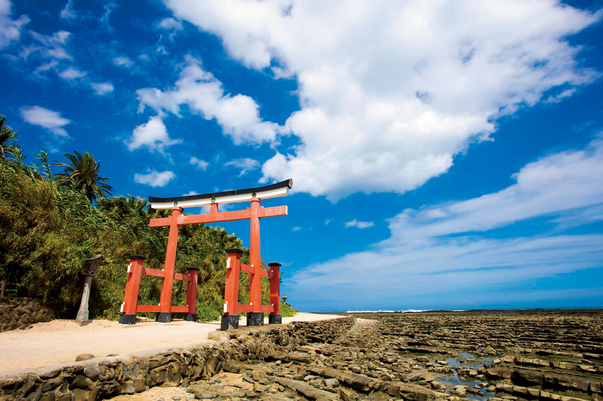
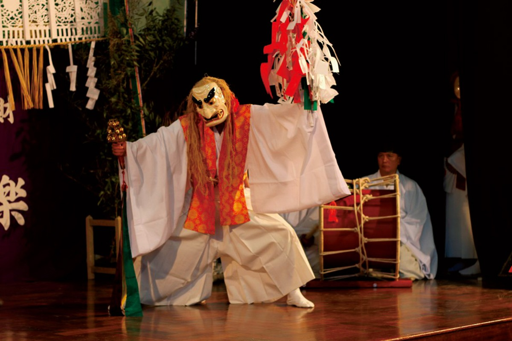
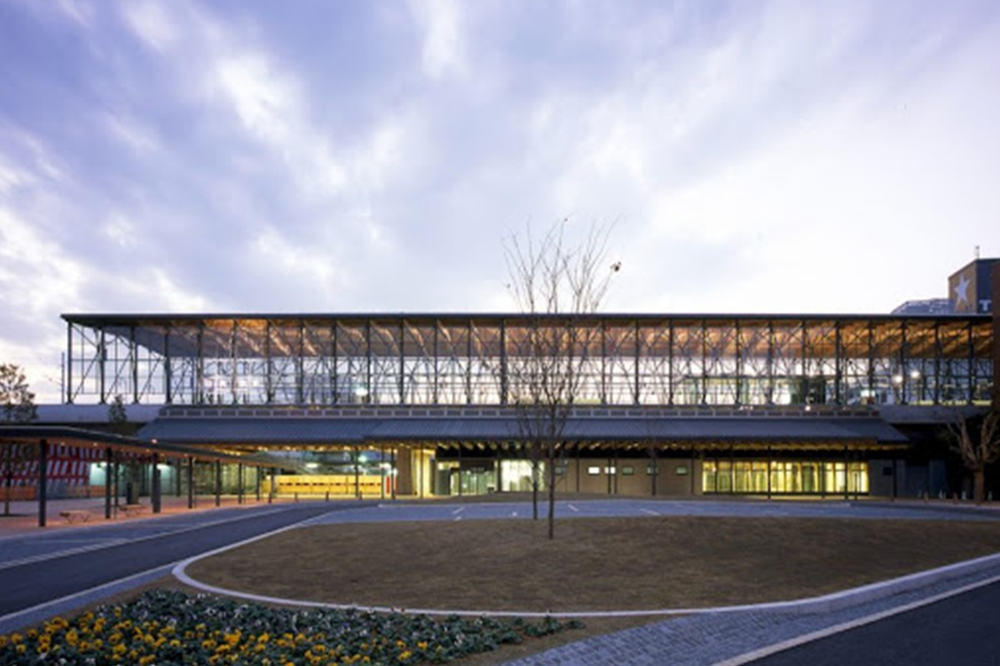
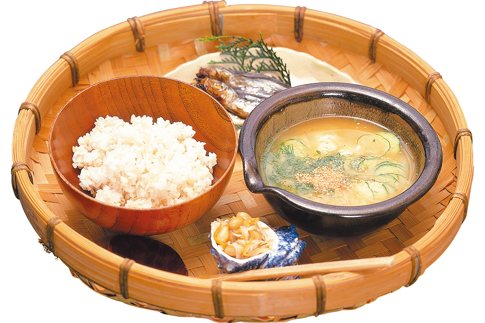
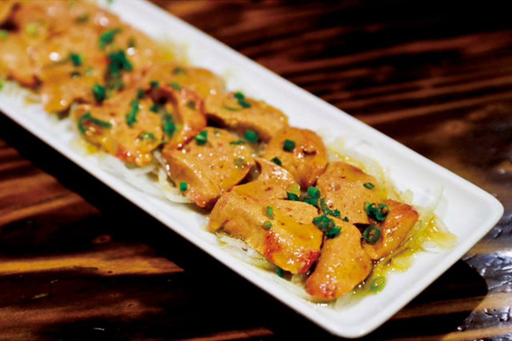
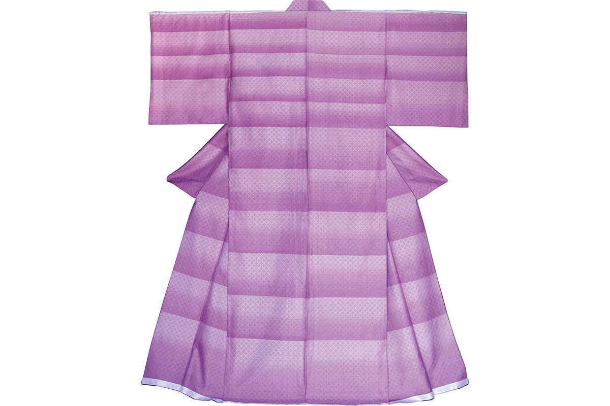
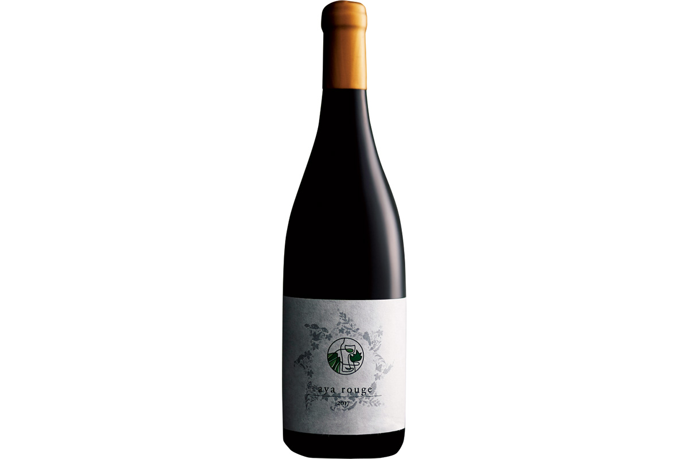

Префектура Миядзаки
Миядзаки: место японских мифов, холодный суп и станция из кедра

Красные ворота тории стоят у скалистого берега на фоне синего моря и ясного неба.
Земля, где разворачивались сюжеты древних хроник, а по берегу ходят дикие лошади. Разбираем, за чем ехать в Миядзаки: от святилища на острове посреди моря до глиняной лапши и рисовой водки, с которой началась мода по всей стране.
О префектуре
Сцена, на которой разворачивались древние хроники
В городе Такатихо сохранился ночной кагура с обрядом открытия небесной пещеры, а остров Аосима связан с легендой о братьях Умисати и Ямасати. Эти и другие места входят в «Кодзики» и «Нихон сёки», потому префектуру зовут родиной мифов и здесь сохранилось много связанных с ними памятников.
С древности земля называлась «Хюга», потому что лежит прямо навстречу восходящему солнцу. Знак «солнце» из этого слова стоит в центре эмблемы префектуры, а от него в три стороны расходятся лучи. Имя «Миядзаки» связывают с тем, что прежде здесь были обширные пустоши, и название означает место за полем.
Солнце здесь светит много, растения и цветы растут в избытке, а климат тёплый, потому земледелие и животноводство сильно развиты. Говядина миядзаки, местная порода кур, манго и цитрус хюга-нацу известны по всей стране.
Что посмотреть
Святилище на острове в море
Святилище Аосима
Это место из мифа о братьях Умисати и Ямасати, и ему приписывают помощь в удачных знакомствах и браке. Остров целиком считается священным, потому к святилищу идут по мосту Яёй.
- Адрес
- 2-13-1 Aoshima, Miyazaki, Miyazaki
- Справки
- служба святилища Аосима
- Телефон
- +81 985-65-1262
Что ещё посмотреть
- Ущелье Такатихо, колонны скал и водопад у реки
- Мыс Тоэ, маяк и дикие лошади на плато
- Святилище Миядзаки дзингу, главный храм города
Праздники
Тридцать три обряда до рассвета
Ночная кагура в Такатихо
В посёлках Такатихо служат кагура из тридцати трёх частей и делают это всю ночь напролёт. Обряд внесён в список важного нематериального народного наследия страны.

- Период
- с середины ноября по начало февраля, по посёлкам по-разному
- Место
- посёлок Такатихо, район Митаи
Другие праздники
- Большой обряд святилища Миядзаки дзингу, шествие и выступления
- Международный музыкальный фестиваль, концерты в разных залах
- Праздник Хэйкэ в Сиибе, обряды в память о воинах
Музеи и архитектура
Вокзал из местного кедра
Вокзал города Хюга
Вокзал спроектировал архитектор Наито Хироси, и в отделке повсюду использован местный кедр. Необычная архитектура получила высокую оценку в мире, а привокзальная площадь считается частью общего замысла.

- Адрес
- 1-19 Kamimachi, Hyuga, Miyazaki
- Телефон
- +81 982-52-3061
Что ещё посмотреть
- Главное здание управления префектуры, административное здание с историей
- Ратуша города Хюга, общественное здание из дерева
- Художественный музей префектуры Миядзаки, живопись и графика региона
Местная кухня
Холодный суп в жаркий день
Хиядзиру
Рыбу из ближних вод обжаривают и разбирают на кусочки, жареную мисо разводят холодным бульоном, добавляют тофу, огурец и пряности и заливают горячим рисом. Летом это блюдо спасает от духоты лучше любой другой еды.

Что ещё попробовать
- Курица тикин намбан, жареное мясо под сладким соусом с майонезом
- Угольная курица дзидоккё, порода местной курицы на углях
- Рыбное суши, прессованное суши с рыбой горных рек
Где поесть
Курица на бамбуковом угле
Магазин Санку у города Нитинана
Заведение любят за свежую местную курицу дзидоккё: её готовят на бамбуковом угле, отчего мясо выходит мягким, а вкус получается плотным и насыщенным.

- Адрес
- 2693 Kazeda, Nichinan, Miyazaki
- Телефон
- +81 987-23-7345
- Часы
- 18:00-22:00
- Выходные
- 18 и 26 число каждого месяца, воскресенье
- Бронирование
- только по записи, от четырёх гостей
Ремёсла
Шёлк, который делает деревня
Мастерская Ая-но тэцуму
В работе применяют традиционные приёмы на всех этапах: разводят шелкопряда, прядут нить, красят и ткут. Из этого получается ткань с ручным цветом, узором, блеском и ощущением в одежде.

- Телефон
- +81 985-77-0156
- Сайт
- ayasilk.com
Что привезти
Вино с дикими дрожжами
Красное вино «Ая Руж»
Винодельня делает вино вручную на всех этапах, от выращивания винограда до розлива, и работает на диких дрожжах. Основа это мерло, и у напитка яркий фруктовый вкус. Бутылка объёмом 750 миллилитров стоит 7700 иен.

- Телефон
- +81 985-40-1565
- Сайт
- katsukiwines.com
Где остановиться
Семьсот тридцать шесть комнат у океана
Шератон Гранд Оушен Резорт
Отель стоит среди сосновой рощи у Тихого океана, и из всех комнат видно море. Внутри работают горячий источник, спа и несколько ресторанов на местных продуктах.
- Адрес
- Hamayama, Yamasaki, Miyazaki, Miyazaki, Phoenix Seagaia Resort
- Телефон
- +81 985-21-1113
- Комнат
- 736
- Цена
- от 13 400 иен за ночь с двумя приёмами пищи на человека, налоги и сборы включены
Местный диалект
Как здесь говорят «очень вкусно»
- дэгэ умэочень вкусно
- ё: китта надобро пожаловать
- тэгэ тэгэ дэ иття каи так сойдёт
- тэня ван наничего не поделаешь
Рекорды
В чём Миядзаки первая
- №1 отгрузка настоящей рисовой водки
- №1 сбор и площади плантаций кинкана
- №1 производство кедровых брёвен
Вопросы и ответы
Что ещё спрашивают о Миядзаки
Из чего делают то, без чего не обходится стрельба из лука?
Из бамбука. В районе города Мияконодзё растёт бамбук высокого качества, и здесь делают больше всех в стране бамбуковых луков. Ремесло внесено в список традиционных промыслов страны, и почти всё делается руками.
Где на самом юге префектуры живут дикие лошади?
На мысе Тоэ в городе Кусима. Там в дикой природе держится одна из сохранившихся местных пород лошадей, и она признана природным памятником. Животные спокойно пасутся на плато над океаном, и это одна из самых мирных картин префектуры.
Справочник
Миядзаки в цифрах
Общие сведения
| Административный центр | Миядзаки |
| Муниципалитеты | 9 городов, 14 посёлков, 3 села |
| Площадь | 7735 кв. км |
| Население | 1,08 млн человек |
| Плотность населения | 139,7 человека на кв. км |
| Туристов в год | 5,36 млн |
| Дерево префектуры | финиковая пальма, горная сакура, кедр обисуги |
| Цветок префектуры | лилия хамаю |
| Птица префектуры | фазан косидиро-ямадори |
Климат
| Средняя температура | +17,8 |
| Максимум | +31,6 |
| Минимум | +2,4 |
| Осадки | 3168 мм |
| Ясных дней | 67 |
| Дождливых дней | 131 |
| Снежных дней | 2 |
Для путешественника
| Онсэнов | 32 |
| Гостиниц и рёканов | 566 |
| Музеев искусств | 4 |
| Музеев | 34 |
| Митиноэки, придорожных станций | 17 |
| Важных культурных ценностей | 20 |
| Исторических мест | 23 |
| Живописных мест | 4 |
| Природных памятников | 46 |
| Национальные парки | Кирисима-Яку, Кюсю-тюо-санти, Нитинан-кайган и ещё два |
Природные памятники
- Ущелье Гокасэгава, узкое ущелье с водой
- Хохлатый старик, редкая морская птица
- Котлы Сэки-но-о, круглые выбоины в скальном дне
- Пальмовая роща острова Такасима, северный край ареала пальмы